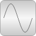

QuasiStaticLibrary for quasi-static electrical single-phase and polyphase AC simulation |

|
Package Contents
|
User's guide |
|
|
Single-phase AC components |
|
|
Quasi-static machine models |
|
|
Polyphase AC components |
|
|
Definition of types for quasi-static AC models |
Information
This information is part of the Modelica Standard Library maintained by the Modelica Association.
- Main Authors:
-
Anton Haumer
Technical Consulting & Electrical Engineering
D-93049 Regensburg, Germany
email: a.haumer@haumer.atDr. Christian Kral
Electric Machines, Drives and Systems
A-1060 Vienna, Austria
email: dr.christian.kral@gmail.com or mail@christiankral.net
Copyright © 1998-2020, Modelica Association and contributors